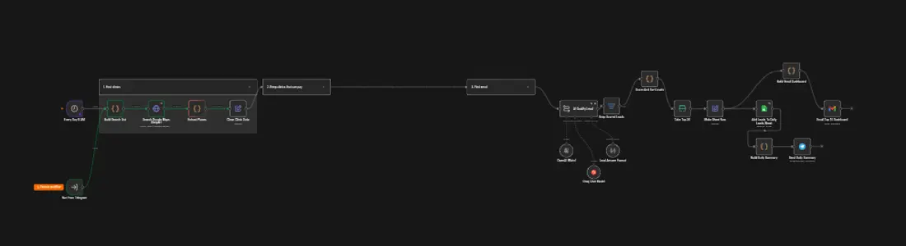

Daily Dental Lead Finder: AI-ranked lead generation, delivered by email
The problem
A freelance automation developer needs a steady flow of possible clients. Searching Google Maps by hand takes hours, the same clinics keep showing up, and there is no clear way to decide who to contact first.
The solution
Every morning the workflow finds new dental clinics in different Indian cities, drops the ones already seen, scores each clinic out of 100, saves the best 30 to a Google Sheet and emails a ready-to-use HTML report.

- 01Runs at 9 AM every day, or on demand from Telegram.
- 02Picks 3 cities of the day from a pool of 100+ Indian cities and searches 4 clinic types in each, 12 Google Maps searches through the Serper API.
- 03Cleans every result into one record: name, category, address, phone, website, rating, review count, Maps link and a unique key.
- 04Keeps clinics that look busy and reachable: a phone number, at least 25 reviews and a rating of 3.8 or more.
- 05Removes repeats within the run, skips any clinic sent in earlier runs, and keeps the 45 busiest.
- 06Opens each clinic website and picks up an email address when one is published.
- 07An AI model (GPT-4o-mini, with Groq as fallback) reads each record and returns structured JSON: clinic type, payment capacity, main problem, how the booking system can help, and a contact note.
- 08The final ranking is calculated in code, not by the AI. The top 30 go to the sheet and the email report, and a short summary goes to Telegram.
The AI explains each clinic in plain language. The score itself comes from fixed rules, so the ranking is repeatable and easy to adjust.
One row per lead, 18 columns. New leads start as Status: New and Contact Status: Not contacted, so the sheet works as a simple pipeline.
An HTML dashboard sent through Gmail: summary cards, a lead-quality note, and a ranked table with score badges, tap-to-call, WhatsApp, website and Maps links, each clinic's problem and our fix, and a button that opens the sheet. The layout adapts to phone screens.
Patients must call to book. WhatsApp booking with UPI payment fits.
No online booking found on the website.
Smaller clinic with a basic website.
Built-in honesty: the report says these are publicly listed clinics, not confirmed buyers, and that the AI score only helps prioritise. The report goes to my own inbox, and the workflow does not message any clinic. Failed runs trigger a separate error workflow.